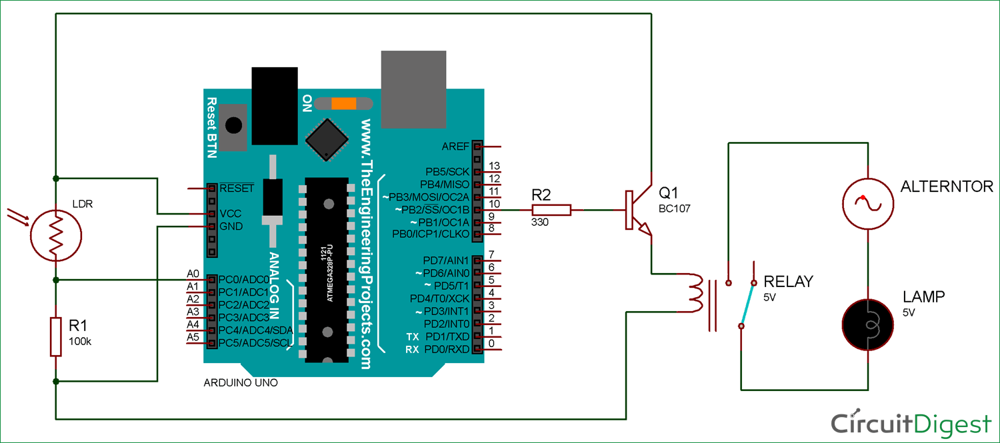

AI IN LIGHT MANAGEMENT SYSTEM
--------------------------------
How AI can help in LIGHT MANAGEMENT?
AI is a wonderfull thing that can happen to us , useing ai we can calculate and predict when the energy is being wasted and as we hv also developed iot systems that can predict the movement of people and predict when the room is empty with the help of light ,motion ,thermo sensors we can establish a flaw less sytem
